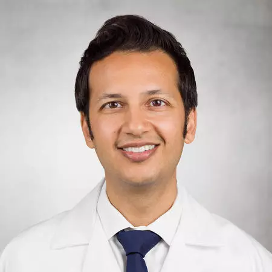

About the Authors
Veeral Ajmera, MD, MAS
Associate Professor of Medicine
University of California at San Diego
Altman Clinical and Translational Research Institute
Dr. Veeral Ajmera is Associate Professor of Medicine in the Division of Gastroenterology and Hepatology and Medical Director of Liver Transplantation at the University of California, San Diego. Dr. Ajmera is an investigator at the UCSD NAFLD Research Center where he collaborates with a multidisciplinary team of experts on research in non-invasive biomarkers, genetics and patient factors associated with chronic liver disease severity and prognosis.
He is a recipient of an American Association for the Study of Liver Diseases (AASLD) Clinical and Translational Research Award and an NIDDK K23 Career Development Award for his work on the non-invasive assessment of patients with NAFLD. He is a co-investigator for adult hepatology for the NIDDK-sponsored NASH Clinical Research Network and Liver Cirrhosis Network.
Rohit Loomba, MD, MHSc

Director of Hepatology, Professor of Medicine
Vice Chief, Division of Gastroenterology
University of California at San Diego
Rohit Loomba, MD, MHSc, is a leading expert in translational research and innovative clinical trial design in nonalcoholic fatty liver disease (NAFLD) and steatohepatitis (NASH). He is the founding director of the UCSD NAFLD Translational Research Unit where his team is conducting cutting edge research in all aspects of NAFLD including non-invasive biomarkers, genetics, epidemiology, clinical trial design, imaging end-points, and integrated OMICs using microbiome, metabolome and lipidome. More
Beom Kyung Kim, MD, Ph.D.
Associate Professor of Medicine
Institute of Gastroenterology and Hepatology
Division of Gastroenterology, Department of Internal Medicine
Yonsei University College of Medicine
Beom Kyung Kim, MD, Ph.D., is an Associate Professor of Medicine in the Department of Medicine at Yonsei Unversity College of Medicine. Dr. Kim's research interests include hepatitis, hepatocellular carcinoma, and the epidemiology of liver disease. Dr. Kim is especially interested in how we can utilize Big data and AI to advance research in medicine.
Dr. Kim is a member of the Korean Association of Internal Medicine, Korean Society of Gastrointestinal Endoscopy, Korean Liver Cancer Association, and Korean Society of Gastroenterology.